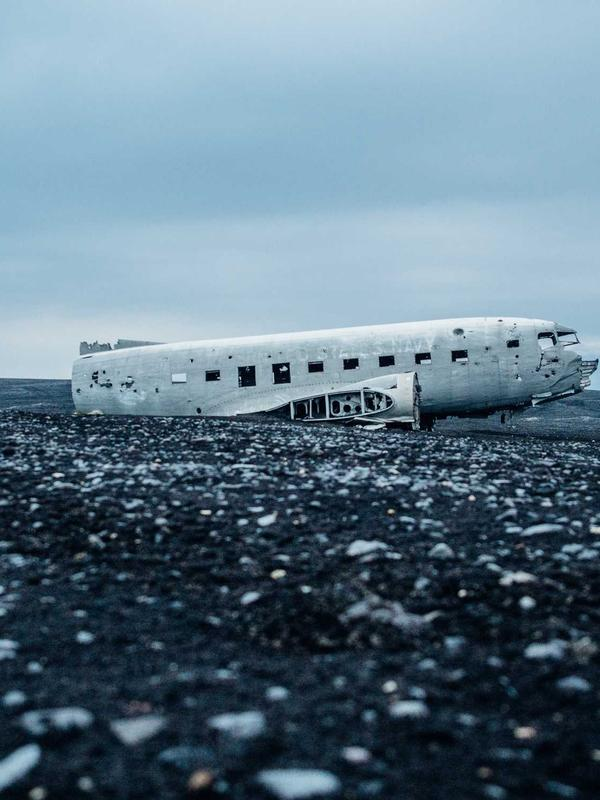

Узнай систему, по которой я готовлю к TOPIK II с 3 по 6 уровень
Техника всех частей, 3 полных теста и работа над ошибками. Темп под дату твоего экзамена: 14 дней, месяц или 2 месяца.
Видео: зачем тебе TOPIK и почему со мной [временное видео, замените на своё]
Почему балл не растёт, хотя ты занимаешься
Чаще всего дело не в языке. Баллы дают за решённые задания конкретного типа за конкретное время.
Тест за тестом
Решаешь новые варианты, а ошибки не разбираешь. Балл стоит на месте.
Тест до техники
Сразу пишешь полный тест, не зная приёмов. Он показывает не уровень, а незнание формата.
Не хватает времени
Длинные тексты в конце читаешь уставшей головой и оставляешь вопросы пустыми.
Письмо без каркаса
Задание 54 стоит 50 баллов, а пишешь его без плана и без проверки.
Три шага курса
Сначала вся техника, потом полный тест, потом пробники с разбором. Тест до техники ничего не покажет.
Техника
Уроки 1–8: аудирование 듣기, чтение 읽기 и письмо 쓰기. Для каждого типа задания алгоритм, ловушки и время.
Полный тест и цель
3 часа дома по настоящему регламенту. На уроке 9 считаем баллы, находим три слабых места и ставим цель.
Пробники и ошибки
Два пробника и работа над ошибками по трекеру. План на последние 7 дней перед экзаменом.
Столько баллов дают два задания письма, а между 4 и 5 уровнем всего 40. Поэтому быстрее всего уровень растёт через письмо, и в курсе на него три отдельных урока.
Что ты получишь на курсе
10 уроков и 2 встречи
Живые занятия 2 раза в неделю, все остаются в записи.
104 задания по типам
Аудирование 50, чтение 50 и письмо 51–54: алгоритм на каждый тип.
Каркасы для письма
Каркасы 53 и 54, банк фраз и связок, правила бланка 원고지.
3 полных теста
Экзамены прошлых лет, без выдуманных вариантов. Пишешь дома, 3 часа.
Трекер ошибок
Тетрадь студента: видно, какие ошибки у тебя повторяются.
План под твой экзамен
Программа с датами для темпа 14 дней, месяц или 2 месяца.
Notion на год
Все материалы, задания и шаблоны, доступ на 12 месяцев.
Проверка письма
В тарифах «Письмо+» и «С Айс» я лично проверяю твои эссе 53 и 54.
Бонусы ко всем тарифам
Словарь к пробникам
Слова каждого задания с переводом на русский. Открываешь после того, как тест написан.
110 советов из 5 книг
Советы из книг по подготовке к TOPIK, с официального сайта и от сдавших на 6 уровень. Прямо в уроках, с источником.
Бланки и чек-листы
Бланки 원고지 для печати, шкала самооценки письма и чек-лист дня экзамена.
Результаты учеников
С чего начинали, что поменяли в подготовке и что получилось на экзамене.
[Имя, зачем TOPIK]
Было: [уровень и балл]
Стало: [уровень и балл]
[Имя, зачем TOPIK]
Было: [уровень и балл]
Стало: [уровень и балл]
[Имя, зачем TOPIK]
Было: [уровень и балл]
Стало: [уровень и балл]

Айс, ваш гид по TOPIK II
До 11 класса я жила в селе, где из развлечений были книги и корейские сериалы. Потом поступила на бюджет в Бишкеке, а по стипендии GKS переехала в Корею.
12 лет живу в Сеуле, работаю в IT и сдала TOPIK на 6급. Готовлю к TOPIK II с 3 по 6 уровень. Меня читают 24,9 тыс. человек в Instagram. Со мной уже готовились [число учеников].
Я собрала курс, где всё разложено по шагам: что делать, сколько минут на это тратить и как себя проверить.
Программа курса
Встреча 1 и урок 1: как устроен TOPIK II
- Запись эфира «Где теряют баллы», анкета: уровень, дата экзамена и цель
- Что ждёт в зале, 7 правил, которые берегут баллы
- Два трека: A с целью от 150 баллов, B с целью от 190
Урок 2: аудирование 1–20
- Ты всегда на один вопрос впереди: варианты читаешь, пока диктор не начал
- 5 типов заданий и система пометок на буклете
Урок 3: аудирование 21–50
- Два прослушивания: в первом ловишь мысль, во втором цифры и детали
- 8 формулировок вопросов и правило «после поворота»
Урок 4: чтение 1–24
- Таймер и контрольные точки, приёмы по типам заданий
- Банк синонимичной грамматики
Урок 5: чтение 25–50
- Тренировка «с конца», чтобы длинные тексты доставались свежей голове
- Правило последнего предложения
Уроки 6–8: письмо 51–54
- 51 и 52: пишем кусок, который стыкуется с текстом, 2 минуты на пропуск
- 53: каркас из 4 блоков, банки фраз, регламент 10 минут
- 54: один подвопрос, один абзац, план на полях за 3 минуты
Урок 9: полный тест, уровень и цель
- Полный тест дома, 3 часа по регламенту
- Считаем баллы, находим три слабых места, ставим реалистичную цель
Урок 10 и встреча 2: пробники и работа над ошибками
- Метод в 4 шага и 6 причин ошибок
- План последних 7 дней и чек-лист дня экзамена
Оставь заявку до 15 января 2027 и получи скидку 20%
- ✓ место на потоке раньше остальных
- ✓ самая низкая цена
- ✓ видео и PDF с программой
- ✓ личный ответ в Telegram
Заявка бесплатная и ни к чему не обязывает. Оплату я предлагаю только после знакомства.
Тарифы
Программа и материалы одинаковые во всех тарифах, отличается поддержка. Цены в долларах.
Доступ
Занимаешься сам и сверяешь себя с образцами.
- 10 уроков и 2 встречи, записи
- Notion на год
- 3 полных теста
- Трекер ошибок, словарь, 110 советов
- Проверка эссе 53 и 54
- Личные занятия со мной
Письмо+
Всё из «Доступа» и моя проверка твоего письма.
- Всё из тарифа «Доступ»
- Проверка эссе 53 и 54 с правками
- Разбор полного теста и трёх слабых мест
- Цель и план до экзамена вместе со мной
- Связь со мной между занятиями
- Личные занятия со мной
Мест: 30
Выбрать «Письмо+»С Айс
Со мной лично по твоему плану.
- Всё из тарифа «Письмо+»
- Личные занятия со мной: [24 занятия]
- Проверка всех твоих письменных работ
- Приоритетные ответы
Мест: 7
Выбрать «С Айс»Скидка 20% действует для заявок до 15 января 2027 включительно. Возврата после оплаты нет: материалы открываются сразу, все вопросы решаем до оплаты.
Вопросы и ответы
Какой уровень нужен, чтобы начать?
Когда старт потока?
Что такое предзапись?
Я не в Корее. Где сдавать TOPIK?
У меня экзамен позже. Есть смысл?
Вы гарантируете результат?
Можно вернуть деньги?
Как оплатить?
파이팅! Готов(а) сдать TOPIK II на уровень выше?
Предзапись до 15 января 2027: скидка 20%, видео и PDF с программой.